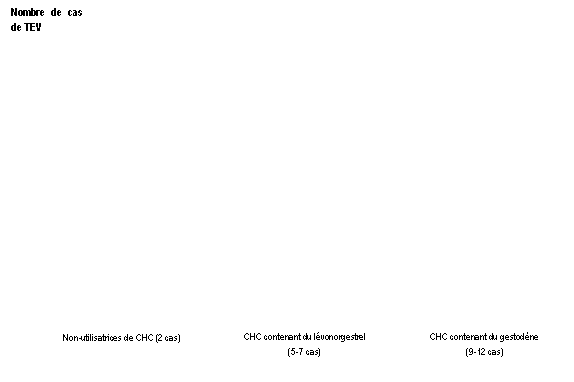

RÉSUMÉ DES CARACTÉRISTIQUES DU PRODUIT
ANSM - Mis à jour le : 07/10/2014
PERLEANE, comprimé enrobé
2. COMPOSITION QUALITATIVE ET QUANTITATIVE
Gestodène ...................................................................................................................................... 0,05 mg
Ethinylestradiol ............................................................................................................................... 0,03 mg
Pour un comprimé enrobé beige.
Gestodène ...................................................................................................................................... 0,07 mg
Ethinylestradiol ............................................................................................................................... 0,04 mg
Pour un comprimé enrobé blanc.
Gestodène ...................................................................................................................................... 0,10 mg
Ethinylestradiol ............................................................................................................................... 0,03 mg
Pour un comprimé enrobé vert.
Pour la liste complète des excipients, voir rubrique 6.1.
Comprimé enrobé.
4.1. Indications thérapeutiques
Contraception hormonale orale.
La décision de prescrire PERLEANE doit être prise en tenant compte des facteurs de risque de la patiente, notamment ses facteurs de risque de thrombo-embolie veineuse (TEV), ainsi que du risque de TEV associé à PERLEANE en comparaison aux autres CHC (Contraceptifs Hormonaux Combinés) (voir rubriques 4.3 et 4.4).
4.2. Posologie et mode d'administration
Prendre régulièrement et sans oubli 1 comprimé par jour au même moment de la journée, pendant 21 jours consécutifs avec un arrêt de 7 jours entre chaque plaquette.
Une hémorragie de privation débute habituellement 2 à 3 jours après la prise du dernier comprimé et peut se poursuivre après le début de la plaquette suivante.
L'ordre de prise des comprimés est le suivant: 6 comprimés beiges, puis 5 comprimés blancs, puis 10 comprimés verts.
Début de traitement par PERLEANE :
· Absence de contraception hormonale le mois précédent :
Prendre le 1er comprimé le 1er jour des règles.
· Relais d'un autre contraceptif hormonal estroprogestatif (contraceptif hormonal combiné (CHC), anneau vaginal ou dispositif transdermique (patch) :
Prendre le 1er comprimé le jour suivant la prise du dernier comprimé actif du contraceptif précédent ou au plus tard le jour qui suit la période habituelle d'arrêt des comprimés. Dans le cas de l’anneau vaginal ou du dispositif transdermique, prendre le 1er comprimé le jour de retrait ou au plus tard le jour prévu pour l’application du nouveau dispositif ou du nouvel anneau.
· Relais d'une contraception progestative (pilule microdosée, injectable, implant, dispositif intra-utérin [DIU] contenant un progestatif) :
Le relais d'une contraception microdosée peut se faire à tout moment du cycle et PERLEANE devra être débuté le lendemain de l'arrêt.
Le relais d'un implant ou d’un DIU se fait le jour du retrait, et le relais d'un contraceptif injectable se fait le jour prévu pour la nouvelle injection. Dans tous les cas, il est recommandé d'utiliser une méthode complémentaire de contraception pendant les 7 premiers jours de traitement.
· Après une interruption de grossesse du premier trimestre :
Il est possible de débuter PERLEANE immédiatement. Il n'est pas nécessaire d'utiliser une méthode complémentaire de contraception.
· Après un accouchement ou une interruption de grossesse du deuxième trimestre :
Le post-partum immédiat étant associé à une augmentation du risque thrombo-embolique, les contraceptifs oraux estroprogestatifs ne doivent pas être débutés moins de 21 à 28 jours après un accouchement ou une interruption de grossesse du deuxième trimestre. Si le traitement est commencé plus de 28 jours après un accouchement ou une interruption de grossesse du deuxième trimestre, il est recommandé d'utiliser une méthode complémentaire de contraception de type mécanique pendant les 7 premiers jours de traitement. Cependant, si des relations sexuelles ont déjà eu lieu, il convient de s'assurer de l'absence de grossesse avant le début de prise de contraceptif oral estroprogestatif ou d'attendre les premières règles.
En cas d'allaitement : voir rubrique 4.6.
Conduite à tenir en cas d’oubli d’un ou plusieurs comprimés
La sécurité contraceptive peut être diminuée en cas d'oubli particulièrement si cet oubli augmente l'intervalle de temps entre le dernier comprimé de la plaquette en cours et le 1er comprimé de la plaquette suivante.
· Si l'oubli d'un comprimé est constaté dans les 12 heures qui suivent l'heure habituelle de la prise, prendre immédiatement le comprimé oublié, et poursuivre le traitement normalement en prenant le comprimé suivant à l'heure habituelle.
· Si l'oubli d'un comprimé est constaté plus de 12 heures après l'heure normale de la prise, la sécurité contraceptive n'est plus assurée.
Les deux règles de base suivantes s’appliquent en cas d’oubli de prise des comprimés :
1. La prise des comprimés ne doit jamais être interrompue pendant plus de 7 jours.
2. La prise ininterrompue de comprimés pendant 7 jours est requise pour obtenir une inhibition correcte de l’axe hypothalamo-hypophyso-ovarien.
Les conseils suivants seront donc donnés en pratique :
Semaine 1
La femme prendra le dernier comprimé oublié dès qu’elle y pense, même si cela veut dire qu’elle doit prendre 2 comprimés en même temps. Elle continuera ensuite à prendre les comprimés suivants à l’heure habituelle. Elle devra aussi utiliser simultanément une contraception mécanique complémentaire (exemple, un préservatif) pendant les 7 jours suivants. En cas de rapports sexuels au cours des 7 jours qui précèdent, la possibilité d’une grossesse doit être envisagée. Le risque de grossesse est d'autant plus élevé que le nombre de comprimés oubliés est important ou que la date de l'oubli est proche du début de la plaquette.
Semaine 2
La femme prendra le dernier comprimé oublié dès qu’elle y pense, même si cela veut dire qu’elle doit prendre 2 comprimés en même temps. Elle continuera ensuite à prendre les comprimés à l’heure habituelle. Si les comprimés ont été pris correctement les 7 jours qui précèdent le comprimé oublié, il ne sera pas nécessaire de prendre des mesures contraceptives complémentaires. Toutefois si plusieurs comprimés ont été oubliés, il sera recommandé à la femme d’utiliser une autre méthode de contraception pendant 7 jours.
Semaine 3
Le risque de diminution de l’efficacité contraceptive est maximal compte tenu de l’approche de la période de 7 jours sans comprimés. Toutefois, il est possible d’empêcher la réduction de l’efficacité contraceptive en modulant la prise de comprimés. Il ne sera donc pas nécessaire de prendre des mesures contraceptives complémentaires si l’on suit l’une des alternatives ci-dessous, à condition que tous les comprimés aient été pris correctement pendant les 7 jours qui précèdent le comprimé oublié. Toutefois, si cela n’est pas le cas, il sera recommandé à la femme de suivre la première des deux alternatives et d’utiliser simultanément une autre méthode de contraception pendant les 7 jours suivants.
1. La femme prendra le dernier comprimé oublié dès qu’elle y pense, même si cela veut dire qu’elle doit prendre 2 comprimés en même temps. Elle continuera ensuite à prendre les comprimés à l’heure habituelle. Elle commencera la plaquette suivante immédiatement après avoir pris le dernier comprimé de la plaquette courante, c’est-à-dire qu’il n’y aura pas d’interruption entre les plaquettes. L’apparition d’une hémorragie de privation avant la fin de la deuxième plaquette est peu probable mais des spottings (gouttes ou taches de sang) ou des métrorragies sont possibles les jours de prise des comprimés.
2. Il pourra aussi être conseillé à la femme d’arrêter de prendre les comprimés de la plaquette courante. Dans ce cas, elle devra observer une période sans comprimés de 7 jours maximum, y compris les jours où elle a oublié de prendre les comprimés, et continuer ensuite avec la plaquette suivante.
Si la femme a oublié des comprimés et n’a pas d’hémorragie de privation pendant la première période normale sans comprimé, la possibilité d’une grossesse devra être envisagée.
En cas de troubles gastro-intestinaux :
En cas de troubles gastro-intestinaux sévères (par exemple des vomissements ou une diarrhée), l'absorption d’un comprimé peut ne pas être complète ; des mesures contraceptives complémentaires doivent donc être prises.
· Si des vomissements se produisent dans les 3-4 heures suivant la prise du comprimé, un nouveau comprimé doit être pris en remplacement dès que possible. Le nouveau comprimé doit être pris si possible dans les 12 heures qui suivent l’heure habituelle de prise.
· Si plus de 12 heures se sont écoulées, les mêmes consignes que celles données pour les oublis de comprimés doivent s’appliquer (voir rubrique 4.2. «Conduite à tenir en cas d’oubli d’un ou plusieurs comprimés»).
Si la femme ne veut pas modifier le calendrier normal de prise des comprimés, elle doit prendre le(s) comprimé(s) supplémentaire(s) à partir d’une autre plaquette.
Les contraceptifs hormonaux combinés (CHC) ne doivent pas être utilisés dans les situations suivantes.
En cas de survenue pour la première fois de l'une de ces pathologies lors de la prise d’un CHC, interrompre immédiatement le traitement :
· Présence ou risque de thrombo-embolie veineuse (TEV) :
o Thrombo-embolie veineuse – présence de TEV (patiente traitée par des anticoagulants) ou antécédents de TEV (p. ex. thrombose veineuse profonde [TVP] ou embolie pulmonaire [EP]).
o Prédisposition connue, héréditaire ou acquise, à la thrombo-embolie veineuse, telle qu’une résistance à la protéine C activée (PCa) (y compris une mutation du facteur V de Leiden), un déficit en antithrombine III, un déficit en protéine C, un déficit en protéine S.
o Intervention chirurgicale majeure avec immobilisation prolongée (voir rubrique 4.4).
o Risque élevé de thrombo-embolie veineuse dû à la présence de multiples facteurs de risque (voir rubrique 4.4).
· Présence ou risque de thrombo-embolie artérielle (TEA) :
o Thrombo-embolie artérielle – présence ou antécédents de thrombo-embolie artérielle (p. ex. infarctus du myocarde [IM]) ou de prodromes (p. ex. angine de poitrine).
o Affection cérébrovasculaire – présence ou antécédents d’accident vasculaire cérébral (AVC) ou de prodromes (p. ex. accident ischémique transitoire [AIT]).
o Prédisposition connue, héréditaire ou acquise, à la thrombo-embolie artérielle, telle qu’une hyperhomocystéinémie ou la présence d’anticorps anti-phospholipides (anticorps anti-cardiolipine, anticoagulant lupique).
o Antécédents de migraine avec signes neurologiques focaux.
o Risque élevé de thrombo-embolie artérielle dû à la présence de multiples facteurs de risque (voir rubrique 4.4) ou d’un facteur de risque sévère tel que :
§ diabète avec symptômes vasculaires,
§ hypertension artérielle sévère,
§ dyslipoprotéinémie sévère.
· Pancréatite ou antécédents de pancréatite associée à une hypertriglycéridémie sévère.
· Affection hépatique sévère ou antécédent d’affection hépatique sévère, en l’absence de normalisation des tests fonctionnels hépatiques.
· Tumeur hépatique (bénigne ou maligne) évolutive ou ancienne.
· Tumeur maligne hormono-dépendante connue ou suspectée (par exemple, tumeurs des organes génitaux ou du sein).
· Saignements vaginaux non diagnostiqués.
· Hypersensibilité aux substances actives ou à l’un des excipients de PERLEANE.
PERLEANE est contre-indiquée en association avec le millepertuis (voir rubrique 4.5).
4.4. Mises en garde spéciales et précautions d'emploi
Si la patiente présente l’un des troubles ou l’un des facteurs de risque mentionnés ci-dessous, la pertinence du traitement par PERLEANE doit être discutée avec elle.
En cas d’aggravation ou de survenue de l’un de ces troubles ou facteurs de risque, la nécessité d’interrompre l’utilisation de PERLEANE doit être discutée entre le médecin et la patiente.
TROUBLES CIRCULATOIRES
Risque de thrombo-embolie veineuse (TEV)
Le risque de TEV est augmenté chez les femmes qui utilisent un contraceptif hormonal combiné (CHC) en comparaison aux femmes qui n’en utilisent pas. Les CHC contenant du lévonorgestrel, du norgestimate ou de la noréthistérone sont associés au risque de TEV le plus faible. Le risque de TEV associé aux autres CHC, tels que PERLEANE, peut être jusqu’à deux fois plus élevé. La décision d’utiliser tout autre CHC que ceux associés au risque de TEV le plus faible doit être prise uniquement après concertation avec la patiente afin de s’assurer qu’elle comprend le risque de TEV associé à PERLEANE, l’influence de ses facteurs de risque actuels sur ce risque et le fait que le risque de TEV est maximal pendant la première année d’utilisation. Certaines données indiquent également une augmentation du risque lors de la reprise d’un CHC après une interruption de 4 semaines ou plus.
Parmi les femmes qui n’utilisent pas de CHC et qui ne sont pas enceintes, environ 2 sur 10 000 développeront une TEV sur une période d’un an. Cependant, chez une femme donnée, le risque peut être considérablement plus élevé, selon les facteurs de risque qu’elle présente (voir ci-dessous).
On estime1 que sur 10 000 femmes qui utilisent un CHC contenant du gestodène, 9 à 12 développeront une TEV sur une période d’un an ; ce nombre est à comparer à celui d’environ 62 chez les femmes qui utilisent un CHC contenant du lévonorgestrel.
Dans les deux cas, le nombre de TEV par année est inférieur à celui attendu pendant la grossesse ou en période post-partum.
La TEV peut être fatale dans 1 à 2 % des cas.
1 Ces incidences ont été estimées à partir de l’ensemble des données des études épidémiologiques, en s’appuyant sur les risques relatifs liés aux différents CHC en comparaison aux CHC contenant du lévonorgestrel.
2 Point central de l’intervalle de 5-7 pour 10 000 années-femmes sur la base d’un risque relatif, pour les CHC contenant du lévonorgestrel par rapport à la non-utilisation d’un CHC, d’environ 2,3 à 3,6
Nombre de cas de TEV pour 10 000 femmes sur une période d’un an

De façon extrêmement rare, des cas de thrombose ont été signalés chez des utilisatrices de CHC dans d’autres vaisseaux sanguins, p. ex. les veines et artères hépatiques, mésentériques, rénales ou rétiniennes.
Facteurs de risque de TEV
Le risque de complications thrombo-emboliques veineuses chez les utilisatrices de CHC peut être considérablement accru si d’autres facteurs de risque sont présents, en particulier si ceux-ci sont multiples (voir le tableau ci-dessous).
PERLEANE est contre-indiqué chez les femmes présentant de multiples facteurs de risque, ceux-ci les exposant à un risque élevé de thrombose veineuse (voir rubrique 4.3). Lorsqu’une femme présente plus d’un facteur de risque, il est possible que l’augmentation du risque soit supérieure à la somme des risques associés à chaque facteur pris individuellement – dans ce cas, le risque global de TEV doit être pris en compte. Si le rapport bénéfice/risque est jugé défavorable, le CHC ne doit pas être prescrit (voir rubrique 4.3).
Tableau : Facteurs de risque de TEV
|
Facteur de risque |
Commentaire |
|
Obésité (indice de masse corporelle supérieur à 30 kg/m²) |
L’élévation de l’IMC augmente considérablement le risque. Ceci est particulièrement important à prendre en compte si d’autres facteurs de risque sont présents. |
|
Immobilisation prolongée, intervention chirurgicale majeure, toute intervention chirurgicale sur les jambes ou le bassin, neurochirurgie ou traumatisme majeur
Remarque : l’immobilisation temporaire, y compris les trajets aériens > 4 heures, peut également constituer un facteur de risque de TEV, en particulier chez les femmes présentant d’autres facteurs de risque |
Dans ces situations, il est conseillé de suspendre l’utilisation de la pilule (au moins quatre semaines à l’avance en cas de chirurgie programmée) et de ne reprendre le CHC que deux semaines au moins après la complète remobilisation. Une autre méthode de contraception doit être utilisée afin d’éviter une grossesse non désirée. Un traitement anti-thrombotique devra être envisagé si PERLEANE, n’a pas été interrompu à l’avance.
|
|
Antécédents familiaux (thrombo-embolie veineuse survenue dans la fratrie ou chez un parent, en particulier à un âge relativement jeune, c.-à-d. avant 50 ans) |
En cas de prédisposition héréditaire suspectée, la femme devra être adressée à un spécialiste pour avis avant toute décision concernant l’utilisation de CHC |
|
Autres affections médicales associées à la TEV |
Cancer, lupus érythémateux disséminé, syndrome hémolytique et urémique, maladies inflammatoires chroniques intestinales (maladie de Crohn ou rectocolite hémorragique) et drépanocytose |
|
Âge |
En particulier au-delà de 35 ans |
Il n’existe aucun consensus quant au rôle éventuel joué par les varices et les thrombophlébites superficielles dans l’apparition ou la progression d’une thrombose veineuse.
L’augmentation du risque de thrombo-embolie pendant la grossesse, et en particulier pendant les 6 semaines de la période puerpérale, doit être prise en compte (pour des informations concernant « Grossesse et allaitement », voir rubrique 4.6).
Symptômes de TEV (thrombose veineuse profonde et embolie pulmonaire)
Les femmes doivent être informées qu’en cas d’apparition de ces symptômes, elles doivent consulter un médecin en urgence et lui indiquer qu’elles utilisent un CHC. Les symptômes de la thrombose veineuse profonde (TVP) peuvent inclure :
· gonflement unilatéral d’une jambe et/ou d’un pied ou le long d’une veine de la jambe ;
· douleur ou sensibilité dans une jambe, pouvant n’être ressentie qu’en position debout ou lors de la marche ;
· sensation de chaleur, rougeur ou changement de la coloration cutanée de la jambe affectée.
Les symptômes de l’embolie pulmonaire (EP) peuvent inclure :
· apparition soudaine et inexpliquée d’un essoufflement ou d’une accélération de la respiration ;
· toux soudaine, pouvant être associée à une hémoptysie ;
· douleur thoracique aiguë ;
· étourdissements ou sensations vertigineuses sévères ;
· battements cardiaques rapides ou irréguliers.
Certains de ces symptômes (p. ex. « essoufflement », « toux ») ne sont pas spécifiques et peuvent être interprétés à tort comme des signes d’événements plus fréquents ou moins sévères (infections respiratoires, p. ex.).
Les autres signes d’une occlusion vasculaire peuvent inclure : douleur soudaine, gonflement et coloration légèrement bleutée d’une extrémité.
Si l’occlusion se produit dans l’œil, les symptômes peuvent débuter sous la forme d’une vision trouble indolore pouvant évoluer vers une perte de la vision. Dans certains cas, la perte de la vision peut survenir presque immédiatement.
Risque de thrombo-embolie artérielle (TEA)
Des études épidémiologiques ont montré une association entre l’utilisation de CHC et l’augmentation du risque de thrombo-embolie artérielle (infarctus du myocarde) ou d’accident cérébrovasculaire (p. ex. accident ischémique transitoire, AVC). Les événements thrombo-emboliques artériels peuvent être fatals.
Facteurs de risque de TEA
Le risque de complications thrombo-emboliques artérielles ou d’accident cérébrovasculaire chez les utilisatrices de CHC augmente avec la présence de facteurs de risque (voir le tableau). PERLEANE, est contre-indiqué chez les femmes présentant un facteur de risque sévère ou de multiples facteurs de risque de TEA qui les exposent à un risque élevé de thrombose artérielle (voir rubrique 4.3). Lorsqu’une femme présente plus d’un facteur de risque, il est possible que l’augmentation du risque soit supérieure à la somme des risques associés à chaque facteur pris individuellement – dans ce cas, le risque global doit être pris en compte. Si le rapport bénéfice/risque est jugé défavorable, le CHC ne doit pas être prescrit (voir rubrique 4.3).
Tableau : Facteurs de risque de TEA
|
Facteur de risque |
Commentaire |
|
Âge |
En particulier au-delà de 35 ans |
|
Tabagisme |
Il doit être conseillé aux femmes de ne pas fumer si elles souhaitent utiliser un CHC. Il doit être fortement conseillé aux femmes de plus de 35 ans qui continuent de fumer d’utiliser une méthode de contraception différente. |
|
Hypertension artérielle |
|
|
Obésité (indice de masse corporelle supérieur à 30 kg/m2) |
L’élévation de l’IMC augmente considérablement le risque. Ceci est particulièrement important à prendre en compte chez les femmes présentant d’autres facteurs de risque. |
|
Antécédents familiaux (thrombo-embolie artérielle survenue dans la fratrie ou chez un parent, en particulier à un âge relativement jeune, c.-à-d. avant 50 ans) |
En cas de prédisposition héréditaire suspectée, la femme devra être adressée à un spécialiste pour avis avant toute décision concernant l’utilisation de CHC. |
|
Migraine |
L’accroissement de la fréquence ou de la sévérité des migraines lors de l’utilisation d’un CHC (qui peut être le prodrome d’un événement cérébrovasculaire) peut constituer un motif d’arrêt immédiat du CHC. |
|
Autres affections médicales associées à des événements indésirables vasculaires |
Diabète, hyperhomocystéinémie, valvulopathie cardiaque et fibrillation auriculaire, dyslipoprotéinémie et lupus érythémateux disséminé |
Symptômes de TEA
Les femmes doivent être informées qu’en cas d’apparition de ces symptômes, elles doivent consulter un médecin en urgence et lui indiquer qu’elles utilisent un CHC.
Les symptômes d’un accident cérébrovasculaire peuvent inclure :
· apparition soudaine d’un engourdissement ou d’une faiblesse du visage, d’un bras ou d’une jambe, en particulier d’un côté du corps ;
· apparition soudaine de difficultés à marcher, de sensations vertigineuses, d’une perte d’équilibre ou de coordination ;
· apparition soudaine d’une confusion, de difficultés à parler ou à comprendre ;
· apparition soudaine de difficultés à voir d’un œil ou des deux yeux ;
· céphalée soudaine, sévère ou prolongée, sans cause connue ;
· perte de conscience ou évanouissement avec ou sans crise convulsive.
Des symptômes temporaires suggèrent qu’il s’agit d’un accident ischémique transitoire (AIT).
Les symptômes de l’infarctus du myocarde (IM) peuvent inclure :
· douleur, gêne, pression, lourdeur, sensation d’oppression ou d’encombrement dans la poitrine, le bras ou sous le sternum ;
· sensation de gêne irradiant vers le dos, la mâchoire, la gorge, le bras, l’estomac ;
· sensation d’encombrement, d’indigestion ou de suffocation ;
· transpiration, nausées, vomissements ou sensations vertigineuses ;
· faiblesse, anxiété ou essoufflement extrêmes ;
· battements cardiaques rapides ou irréguliers.
CANCERS
Certaines études épidémiologiques suggèrent que les CHC pourraient être associés à une augmentation du risque de cancer du col de l'utérus chez les utilisatrices de CHC au long cours (> 5 ans). Il n'est cependant pas établi si ces pathologies sont dues à d'autres facteurs comme le comportement sexuel et le papillomavirus virus humain (HPV).
Une méta-analyse de 54 études épidémiologiques a conclu qu'il existe une légère augmentation du risque relatif (RR = 1,24) de cancer du sein chez les femmes sous contraception orale. Cette majoration du risque disparaît progressivement au cours des 10 ans qui suivent l’arrêt du CHC.
Le cancer du sein étant rare chez les femmes de moins de 40 ans, le nombre plus élevé de cancers diagnostiqués chez les utilisatrices habituelles ou nouvelles utilisatrices de CHC reste faible par rapport au risque global de cancer du sein.
Ces études ne permettent pas d'établir une relation de causalité. Il est possible que, chez les utilisatrices de CHC, cette augmentation du risque soit due à un diagnostic plus précoce du cancer du sein, aux effets biologiques de cette contraception ou à l'association des deux. Les cancers du sein diagnostiqués chez les utilisatrices ont tendance à être moins évolués cliniquement par rapport à ceux diagnostiqués chez des femmes n'en ayant jamais utilisé.
Dans de rares cas, des tumeurs bénignes du foie (par exemple : adénome hépatique, hyperplasie nodulaire focale), et dans de plus rares cas encore, des tumeurs malignes du foie ont été rapportées chez des utilisatrices de CHC.
Dans des cas isolés, ces tumeurs ont conduit à des hémorragies intra-abdominales mettant en jeu le pronostic vital. Chez les femmes sous CHC, la survenue de douleurs de la partie supérieure de l'abdomen, d'augmentation du volume du foie ou de signes d'hémorragie intra-abdominale doit faire évoquer une tumeur hépatique.
L’utilisation de CHC plus fortement dosés (50 µg éthinylestradiol) diminue le risque de cancer de l’endomètre et de l’ovaire. Ceci demande à être confirmé avec les CHC plus faiblement dosés.
Autres pathologies
Hypertriglycéridémie
Chez les femmes atteintes d'hypertriglycéridémie ou ayant des antécédents familiaux d'hypertriglycéridémie, un risque accru de pancréatite peut survenir en cas d’utilisation d’un CHC.
Hypertension artérielle
Une augmentation modérée de la pression artérielle a été observée chez de nombreuses femmes sous CHC mais elle était rarement cliniquement significative. Une interruption immédiate du CHC n’est justifiée que dans ces rares cas.
La persistance de chiffres tensionnels élevés ou le non contrôle des chiffres tensionnels par un traitement antihypertenseur chez une femme hypertendue prenant un CHC doit faire interrompre celui-ci.
Le CHC pourra éventuellement être repris après normalisation des chiffres tensionnels par un traitement antihypertenseur.
Affections hépatiques
La survenue d'anomalies hépatiques aiguës ou chroniques peut nécessiter l'arrêt du CHC jusqu'à la normalisation des paramètres hépatiques.
Angiœdème
Chez les femmes présentant un angiœdème héréditaire, les estrogènes exogènes peuvent induire ou aggraver des symptômes d’angiœdème.
Intolérance au glucose/Diabète
Les CHC peuvent avoir un effet sur la résistance périphérique à l'insuline et la tolérance au glucose ; il n'est cependant pas obligatoire de modifier le traitement chez des diabétiques utilisant un CHC faiblement dosé (contenant moins de 0,05 mg d'éthinylestradiol). Les femmes diabétiques doivent cependant être étroitement surveillées, en particulier lors de l'instauration d'un CHC.
Autres
La récidive d'un ictère cholestatique et/ou d'un prurit liés à une cholestase survenue au cours d'une grossesse précédente ou de la prise antérieure d'hormones stéroïdiennes doit faire arrêter le CHC.
La survenue ou l'aggravation des pathologies suivantes a été observée au cours de la grossesse ou chez des femmes prenant des CHC, bien que la responsabilité des CHC n'ait pu être établie : ictère et/ou prurit dû à une cholestase, lithiase biliaire, porphyrie, lupus érythémateux disséminé, syndrome hémolytico-urémique, chorée de Sydenham, herpès gravidique, hypoacousie par otosclérose.
Des cas d'aggravations de dépression endogène, d'épilepsie, de maladie de Crohn et de rectocolite hémorragique ont été observés sous CHC.
Un chloasma peut survenir, en particulier chez les femmes ayant des antécédents de chloasma gravidique. Les femmes ayant une prédisposition au chloasma sous CHC doivent éviter de s'exposer au soleil ou aux rayons ultra-violets.
Une attention particulière devra être portée aux patientes ayant une hyperprolactinémie.
Ce médicament contient du lactose. Son utilisation est déconseillée chez les patients présentant une intolérance au galactose, un déficit en lactase de lapp ou syndrome de malabsorption du glucose ou du galactose (maladies héréditaires rares).
Ce médicament contient du saccharose. Son utilisation est déconseillée chez les patients présentant une intolérance au fructose, un syndrome de malabsorption du glucose et du galactose ou un déficit en sucrase/isomaltase.
Consultation/examen médical
Avant l’instauration ou la reprise d’un traitement par PERLEANE, une recherche complète des antécédents médicaux (y compris les antécédents familiaux) doit être effectuée et la présence d’une grossesse doit être exclue. La pression artérielle doit être mesurée et un examen physique doit être réalisé, en ayant à l’esprit les contre-indications (voir rubrique 4.3) et les mises en garde (voir rubrique 4.4). Il est important d’attirer l’attention des patientes sur les informations relatives à la thrombose veineuse et artérielle, y compris le risque associé à PERLEANE comparé à celui associé aux autres CHC, les symptômes de la TEV et de la TEA, les facteurs de risque connus et la conduite à tenir en cas de suspicion de thrombose.
Il doit également être indiqué aux patientes de lire attentivement la notice et de suivre les conseils fournis. La fréquence et la nature des examens doivent être définies sur la base des recommandations en vigueur et adaptées à chaque patiente.
Les patientes doivent être averties que les contraceptifs hormonaux ne protègent pas contre l’infection par le VIH (SIDA) et les autres maladies sexuellement transmissibles.
Examens biologiques :
L'utilisation de contraceptifs hormonaux peut modifier les résultats de certains examens biologiques tels que: les tests fonctionnels hépatiques, thyroïdiens, surrénaliens et rénaux, le taux plasmatique des protéines (porteuses) comme la corticosteroid-binding globulin (CBG) et des fractions lipidiques/lipoprotéiniques, les paramètres du métabolisme glucidique, les paramètres de la coagulation et de la fibrinolyse. Les modifications restent en général dans les limites de la normale.
Diminution de l’efficacité
L’efficacité des CHC peut être réduite en cas d’oubli de comprimés actifs (voir rubrique 4.2), de troubles gastro-intestinaux (voir rubrique 4.2) ou de prise concomitante d’autres médicaments (voir rubrique 4.5).
Troubles du cycle
Des saignements irréguliers (« spottings » ou métrorragies) peuvent survenir sous contraceptifs oraux, en particulier au cours des premiers mois. Ces saignements irréguliers seront considérés comme significatifs s'ils persistent après environ 3 cycles.
Si les saignements irréguliers persistent ou surviennent après des cycles réguliers, une recherche étiologique non hormonale doit alors être effectuée; des examens diagnostiques appropriés doivent être pratiqués afin d'exclure une tumeur maligne ou une grossesse. Ces examens peuvent comporter un curetage.
Chez certaines femmes, les hémorragies de privation peuvent ne pas survenir au cours de l'intervalle libre. Si la contraception orale a été suivie telle que décrite dans la rubrique 4.2, il est peu probable que la femme soit enceinte. Cependant, si la contraception orale n'a pas été suivie correctement avant l’absence de la première hémorragie de privation ou si deux hémorragies de privation successives ne se produisent pas, il convient de s'assurer de l'absence de grossesse avant de poursuivre cette contraception.
4.5. Interactions avec d'autres médicaments et autres formes d'interactions
La diminution des concentrations plasmatiques d’estroprogestatifs peut provoquer une augmentation de l'incidence des saignements intermenstruels et des irrégularités menstruelles et éventuellement réduire l'efficacité du contraceptif estroprogestatif.
Associations contre-indiquées
+ Millepertuis
Diminution des concentrations plasmatiques du contraceptif hormonal, en raison de l'effet inducteur enzymatique du millepertuis, avec risque de baisse d'efficacité voire d'annulation de l'effet dont les conséquences peuvent être éventuellement graves (survenue d'une grossesse).
Associations déconseillées
+ Inducteurs enzymatiques
Anticonvulsivants (phénobarbital, phénytoïne, fosphénytoïne, primidone, carbamazépine, oxcarbazépine) ; rifabutine; rifampicine; efavirenz, névirapine.
Diminution de l'efficacité contraceptive par augmentation du métabolisme hépatique du contraceptif hormonal par l’inducteur.
Utiliser de préférence une autre méthode contraceptive en particulier de type mécanique, pendant la durée de l'association et un cycle suivant.
+ Lamotrigine (voir aussi ci-dessous Associations nécessitant des précautions d’emploi)
Risque de diminution des concentrations et de l’efficacité de la lamotrigine par augmentation de son métabolisme hépatique.
Éviter de mettre en route une contraception orale pendant la période d’ajustement posologique de la lamotrigine.
+ Modafinil
Risque de diminution de l'efficacité contraceptive pendant le traitement et un cycle après l'arrêt du traitement par le modafinil, en raison de son potentiel inducteur enzymatique.
Utiliser des contraceptifs oraux normodosés ou une autre méthode contraceptive.
+ Nelfinavir
Risque de diminution de l'efficacité contraceptive par diminution des concentrations en contraceptif hormonal.
Utiliser de préférence une autre méthode contraceptive, en particulier de type mécanique (préservatif ou stérilet), pendant la durée de l'association et un cycle suivant.
+ Inhibiteurs de protéases boostés par ritonavir
Risque de diminution de l'efficacité contraceptive par diminution des concentrations en contraceptif hormonal, due à l’augmentation de son métabolisme hépatique par le ritonavir.
Utiliser de préférence une autre méthode contraceptive, en particulier de type mécanique (préservatif ou stérilet), pendant la durée de l'association et un cycle suivant.
+ Topiramate
Pour des doses de topiramate supérieures ou égales à 200 mg/jour : risque de diminution de l’efficacité contraceptive par diminution des concentrations en estrogène.
Utiliser de préférence une autre méthode contraceptive, en particulier de type mécanique.
+ Vémurafénib
Risque de diminution des concentrations des estroprogestatifs, avec pour conséquence un risque d’inefficacité.
+ Pérampanel
Pour des doses de pérampanel ≥ 12 mg/j : risque de diminution de l’efficacité contraceptive.
Utiliser de préférence une autre méthode contraceptive, en particulier de type mécanique.
Associations nécessitant des précautions d’emploi
+ Bosentan
Risque de diminution de l'efficacité contraceptive par augmentation du métabolisme hépatique du contraceptif hormonal.
Utiliser une méthode contraceptive fiable, additionnelle ou alternative, pendant la durée de l'association et un cycle suivant.
+ Griséofulvine
Risque de diminution de l’efficacité contraceptive par augmentation du métabolisme hépatique du contraceptif hormonal.
Utiliser de préférence une autre méthode contraceptive, en particulier de type mécanique, pendant la durée de l'association et un cycle suivant.
+ Lamotrigine
Risque de diminution des concentrations et de l’efficacité de la lamotrigine par augmentation de son métabolisme hépatique.
Surveillance clinique et adaptation de la posologie de la lamotrigine lors de la mise en route d’une contraception orale et après son arrêt.
+ Rufinamide
Diminution modérée des concentrations d’éthinylestradiol. Utiliser de préférence une autre méthode contraceptive, en particulier de type mécanique.
Associations à prendre en compte
+ Etoricoxib
Augmentation des concentrations d’éthinylestradiol par l’étoricoxib.
Examens biologiques :
L'utilisation d'associations estroprogestatives peut modifier les résultats de certains examens biologiques tels que: les tests fonctionnels hépatiques, thyroïdiens, surrénaliens et rénaux, le taux plasmatique des protéines (porteuses) comme la corticosteroid-binding globulin (CBG) et des fractions lipidiques/lipoprotéiniques, les paramètres du métabolisme glucidique, les paramètres de la coagulation et de la fibrinolyse. Les modifications restent en général dans les limites de la normale.
PERLEANE n’est pas indiqué pendant la grossesse. En cas de découverte d’une grossesse sous ce médicament, son utilisation doit immédiatement être interrompue.
De nombreuses études épidémiologiques n’ont pas révélé d’augmentation du risque d’anomalies congénitales chez les enfants nés de femmes ayant utilisé un contraceptif oral avant la grossesse.
Aucun effet tératogène n’a été observé lorsqu’un contraceptif hormonal combiné a été pris par erreur en début de grossesse.
L’augmentation du risque de TEV en période post-partum doit être prise en compte lors de la reprise de PERLEANE (voir rubriques 4.2 et 4.4).
Allaitement
En cas d'allaitement, l'utilisation de ce médicament est déconseillée en raison du passage des estroprogestatifs dans le lait maternel.
Si la femme désire allaiter, un autre moyen de contraception doit être proposé.
4.7. Effets sur l'aptitude à conduire des véhicules et à utiliser des machines
Description de certains effets indésirables particuliers
Une augmentation du risque d'événement thrombotique et thrombo-embolique artériel et veineux, incluant l’infarctus du myocarde, l’AVC, les accidents ischémiques transitoires, la thrombose veineuse et l’embolie pulmonaire, a été observée chez les femmes utilisant des CHC ; ceci est abordé plus en détails en rubrique 4.4.
Les effets indésirables suivants ont été observés pendant le traitement par contraceptifs estroprogestatifs oraux :
Pour les effets indésirables graves, tels que les accidents thromboemboliques veineux et artériels, les cancers du col de l’utérus, les cancers du sein et les tumeurs hépatiques malignes, voir rubrique 4.4.
|
|
Fréquent (≥1/100 et <1/10) |
Peu fréquent (≥1/1000 et <1/100) |
Rare (≥1/10000 et <1/1000) |
Très rare (<1/10000) |
Fréquence indéterminée |
|
Tumeurs bénignes, malignes et non précisées (incl kystes et polypes) |
|
|
|
Carcinome hépatocellulaire, tumeurs hépatiques bénignes (par exemple: hyperplasie nodulaire focale, adénome hépatique). |
|
|
Infections et infestations |
Vaginite incluant candidose vaginale |
|
|
|
|
|
Affections du système immunitaire |
|
|
Réactions anaphylactiques avec de très rares cas d'urticaire, angiœdème, troubles circulatoire et respiratoire sévères. |
Exacerbation d'un lupus érythémateux disséminé. |
|
|
Troubles du métabolisme et de la nutrition |
|
Modification de l'appétit (augmentation ou diminution) |
Intolérance au glucose. |
Exacerbation d'une porphyrie. |
|
|
Affections psychiatriques |
Modification de l'humeur incluant la dépression, modification de la libido. |
|
|
|
|
|
Affections du système nerveux |
Nervosité, étourdissement |
|
|
Exacerbation d'une chorée |
|
|
Affections oculaires |
|
|
Irritation par les lentilles de contact |
Névrite optique |
|
|
Affections vasculaires |
|
Hypertension artérielle |
Thrombo-embolie veineuse et thrombo-embolie artérielle |
Aggravation des varices |
|
|
Affections gastro-intestinales |
Nausée, vomissement, douleur abdominale |
Crampes abdominales, ballonnement |
|
Colite ischémique |
Maladie inflammatoire du colon (maladie de Crohn, colite ulcéreuse) |
|
Affections hépatobiliaires |
|
|
Ictère cholestatique |
Pancréatite Lithiase biliaire, cholestase |
Atteinte hépatocellulaire (par exemple : hépatite, fonction hépatique anormale) |
|
Affections de la peau et des tissus sous-cutanés |
Acné |
Rashs, chloasma (melasme) avec risque de persistance, hirsutisme, alopécie |
Erythème noueux |
Erythème polymorphe |
|
|
Affections du rein et des voies urinaires |
|
|
|
Syndrome hémolytique urémique |
|
|
Affections des organes de reproduction et sein |
Douleur, tension, gonflement et sécrétion mammaires, dysménorrhée, modification des règles, modification d’un ectropion et des sécrétions vaginales, aménorrhée. |
|
|
|
|
|
Troubles généraux et anomalies au site d'administration |
Rétention hydrique/œdème Modification du poids (augmentation ou diminution) |
|
|
|
|
|
Investigations |
|
Modification des lipides plasmatiques, incluant une hypertriglycéridémie, augmentation de la pression artérielle |
|
Diminution du taux de folates sériques. |
|
Déclaration des effets indésirables suspectés
La déclaration des effets indésirables suspectés après autorisation du médicament est importante. Elle permet une surveillance continue du rapport bénéfice/risque du médicament. Les professionnels de santé déclarent tout effet indésirable suspecté via le système national de déclaration : Agence nationale de sécurité du médicament et des produits de santé (ANSM) et réseau des Centres Régionaux de Pharmacovigilance. Site internet : www.ansm.sante.fr.
5. PROPRIETES PHARMACOLOGIQUES
5.1. Propriétés pharmacodynamiques
Classe pharmacothérapeutique:
PROGESTATIFS ET ESTROGENES POUR ADMINISTRATION SEQUENTIELLE,
Code ATC: G03AB06.
(Système génito-urinaire et hormones sexuelles)
Estroprogestatif combiné minidosé triphasique.
L'indice de Pearl: 0,1 pour cent années-femmes (27 308 cycles).
L'efficacité contraceptive de PERLEANE résulte de trois actions complémentaires:
· au niveau de l'axe hypothalamohypophysaire par inhibition de l'ovulation,
· au niveau de la glaire cervicale qui devient imperméable à la migration des spermatozoïdes,
· au niveau de l'endomètre, qui devient impropre à la nidation.
5.2. Propriétés pharmacocinétiques
Ethinyl-estradiol
L'éthinyl-estradiol est rapidement et presque complètement absorbé par le tractus gastro-intestinal. Il subit un important effet de premier passage hépatique. Par voie orale, sa biodisponibilité moyenne est de 40 à 45%.
Au niveau plasmatique, l'éthinyl-estradiol se lie exclusivement à l'albumine.
Après administration orale, le pic plasmatique d'éthinyl-estradiol est atteint en 60 à 180 minutes.
La demi-vie de l'éthinyl-estradiol est comprise entre 6 et 31 heures.
L'éthinyl-estradiol subit principalement une hydroxylation aromatique, mais une grande variété de métabolites hydroxylés et méthylés sont formés, que l'on retrouve sous forme libre ou conjuguée. L'éthinyl-estradiol conjugué est excrété par la bile et subit un cycle entérohépatique. 40% du produit sont éliminés dans les urines et 60 % dans les selles.
Gestodène
Le gestodène est rapidement et presque complètement absorbé par le tractus gastro-intestinal. Il ne subit pas d'effet de premier passage hépatique. Il est totalement biodisponible. Au niveau plasmatique, le gestodène se lie à la SHBG (sex hormone binding globuline). Après administration orale, le pic plasmatique du gestodène est atteint en 1 à 2 heures. La demi-vie d'élimination est d'environ 18 heures. Il est principalement métabolisé par réduction du cycle A suivi par une glucuronidation. Environ 50 % du gestodène sont excrétés dans les urines, contre environ 33 % dans les selles.
5.3. Données de sécurité préclinique
Sans objet.
Noyau: lactose monohydraté, amidon de maïs, povidone, calcium édétate de sodium, stéarate de magnésium, silice colloïdale anhydre.
Pelliculage:
· Comprimé beige = oxyde de fer jaune (E172), saccharose, povidone, macrogol 6000, carbonate de calcium, talc, dioxyde de titane (E171).
· Comprimé blanc = saccharose, povidone, macrogol 6000, carbonate de calcium, talc, dioxyde de titane (E171).
· Comprimé vert = SEPISPERSE vert (contient notamment du saccharose), saccharose, povidone, macrogol 6000, carbonate de calcium, talc, dioxyde de titane (E171).
Sans objet.
3 ans.
6.4. Précautions particulières de conservation
A conserver à une température ne dépassant pas 25°C.
6.5. Nature et contenu de l'emballage extérieur
21 comprimés (6 beiges, 5 blancs et 10 verts) sous plaquette thermoformée (Aluminium/PVC/PVDC) en sachet (Aluminium). Boîte de 1 ou 3 plaquette(s).
6.6. Précautions particulières d’élimination et de manipulation
Pas d'exigences particulières.
7. TITULAIRE DE L’AUTORISATION DE MISE SUR LE MARCHE
BIOGARAN
15, BOULEVARD CHARLES DE GAULLE
92700 COLOMBES
8. NUMERO(S) D’AUTORISATION DE MISE SUR LE MARCHE
· 371 581-1: 21 comprimés sous plaquettes thermoformées (Aluminium/PVC/PVDC). Boîte de 1 plaquette.
· 371 582-8: 21 comprimés sous plaquettes thermoformées (Aluminium/PVC/PVDC). Boîte de 3 plaquettes.
9. DATE DE PREMIERE AUTORISATION/DE RENOUVELLEMENT DE L’AUTORISATION
[à compléter par le titulaire]
10. DATE DE MISE A JOUR DU TEXTE
[à compléter par le titulaire]
Sans objet.
12. INSTRUCTIONS POUR LA PREPARATION DES RADIOPHARMACEUTIQUES
Sans objet.
Liste I.